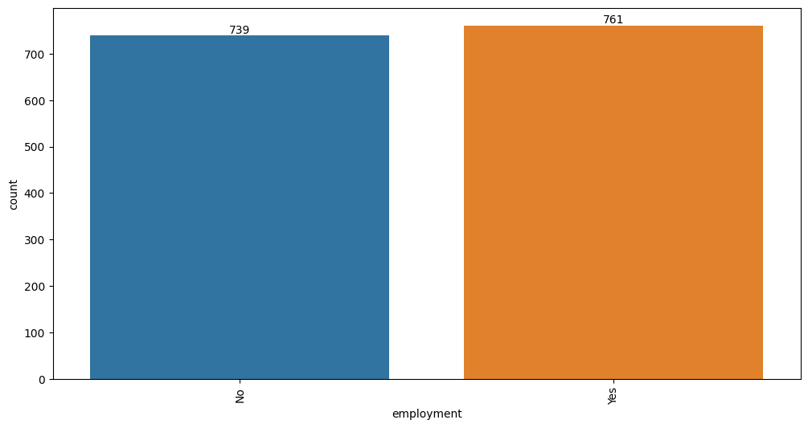
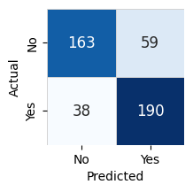
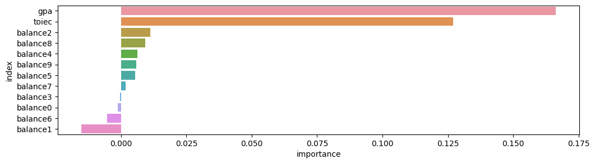

#!pip install autogluon.eda13wk-52: 취업(오버피팅) / 자료분석(Autogluon)
1. 강의영상
2. Imports
import numpy as np
import pandas as pd
import matplotlib.pyplot as plt
import seaborn as sns
import sklearn.model_selection
#---#
from autogluon.tabular import TabularPredictor
import autogluon.eda.auto as auto
#---#
import warnings
warnings.filterwarnings('ignore')3. Data
np.random.randn(43052)
n_balance = 10
toeic = np.random.randint(0,199,size=5000)*5
gpa = np.random.randint(100,450,size=5000)/100
u = toeic * 8/995 + gpa * 10/4.5
u = u - np.mean(u)
v = np.exp(u)/(1+np.exp(u))
employment = np.random.binomial(n=1,p=v)
df = pd.DataFrame({
'toiec':toeic,
'gpa':gpa,
'employment':employment
})
df_balance = pd.DataFrame((np.random.randn(5000,n_balance)).reshape(5000,n_balance)*1,columns = ['balance'+str(i) for i in range(n_balance)]) > 0
df = pd.concat([df,df_balance],axis=1).assign(employment = lambda df: df.employment.map({0:'No',1:'Yes'}))
df_train, df_test = sklearn.model_selection.train_test_split(df, test_size=0.7, random_state=42)df_train| toiec | gpa | employment | balance0 | balance1 | balance2 | balance3 | balance4 | balance5 | balance6 | balance7 | balance8 | balance9 | |
|---|---|---|---|---|---|---|---|---|---|---|---|---|---|
| 4431 | 165 | 1.38 | No | False | True | False | True | False | True | False | False | True | False |
| 2162 | 735 | 2.44 | Yes | False | False | False | False | False | True | False | True | True | False |
| 2396 | 135 | 2.98 | No | True | True | False | True | False | True | False | True | False | True |
| 4768 | 805 | 1.86 | No | False | False | True | True | True | True | False | True | True | True |
| 2271 | 185 | 1.97 | No | True | False | True | True | True | True | False | True | False | False |
| ... | ... | ... | ... | ... | ... | ... | ... | ... | ... | ... | ... | ... | ... |
| 4426 | 95 | 3.63 | Yes | False | True | False | True | True | False | True | False | True | False |
| 466 | 495 | 2.09 | No | True | True | False | False | True | False | False | True | True | False |
| 3092 | 960 | 4.29 | Yes | False | True | True | False | True | True | False | True | True | True |
| 3772 | 375 | 2.86 | No | True | True | True | True | True | False | False | True | True | True |
| 860 | 920 | 1.89 | Yes | False | False | True | True | False | False | True | True | True | False |
1500 rows × 13 columns
4. 적합
# step1 -- pass
# step2
predictr = TabularPredictor(label = 'employment')
# step3
predictr.fit(df_train,num_gpus=1)
# step4
yhat = predictr.predict(df_train)
yyhat = predictr.predict(df_test)No path specified. Models will be saved in: "AutogluonModels/ag-20231130_195640/"
Beginning AutoGluon training ...
AutoGluon will save models to "AutogluonModels/ag-20231130_195640/"
AutoGluon Version: 0.8.1
Python Version: 3.10.13
Operating System: Linux
Platform Machine: x86_64
Platform Version: #140-Ubuntu SMP Thu Aug 4 02:23:37 UTC 2022
Disk Space Avail: 1585.62 GB / 1887.51 GB (84.0%)
Train Data Rows: 1500
Train Data Columns: 12
Label Column: employment
Preprocessing data ...
AutoGluon infers your prediction problem is: 'binary' (because only two unique label-values observed).
2 unique label values: ['No', 'Yes']
If 'binary' is not the correct problem_type, please manually specify the problem_type parameter during predictor init (You may specify problem_type as one of: ['binary', 'multiclass', 'regression'])
Selected class <--> label mapping: class 1 = Yes, class 0 = No
Note: For your binary classification, AutoGluon arbitrarily selected which label-value represents positive (Yes) vs negative (No) class.
To explicitly set the positive_class, either rename classes to 1 and 0, or specify positive_class in Predictor init.
Using Feature Generators to preprocess the data ...
Fitting AutoMLPipelineFeatureGenerator...
Available Memory: 443035.93 MB
Train Data (Original) Memory Usage: 0.04 MB (0.0% of available memory)
Inferring data type of each feature based on column values. Set feature_metadata_in to manually specify special dtypes of the features.
Stage 1 Generators:
Fitting AsTypeFeatureGenerator...
Note: Converting 10 features to boolean dtype as they only contain 2 unique values.
Stage 2 Generators:
Fitting FillNaFeatureGenerator...
Stage 3 Generators:
Fitting IdentityFeatureGenerator...
Stage 4 Generators:
Fitting DropUniqueFeatureGenerator...
Stage 5 Generators:
Fitting DropDuplicatesFeatureGenerator...
Types of features in original data (raw dtype, special dtypes):
('bool', []) : 10 | ['balance0', 'balance1', 'balance2', 'balance3', 'balance4', ...]
('float', []) : 1 | ['gpa']
('int', []) : 1 | ['toiec']
Types of features in processed data (raw dtype, special dtypes):
('float', []) : 1 | ['gpa']
('int', []) : 1 | ['toiec']
('int', ['bool']) : 10 | ['balance0', 'balance1', 'balance2', 'balance3', 'balance4', ...]
0.1s = Fit runtime
12 features in original data used to generate 12 features in processed data.
Train Data (Processed) Memory Usage: 0.04 MB (0.0% of available memory)
Data preprocessing and feature engineering runtime = 0.14s ...
AutoGluon will gauge predictive performance using evaluation metric: 'accuracy'
To change this, specify the eval_metric parameter of Predictor()
Automatically generating train/validation split with holdout_frac=0.2, Train Rows: 1200, Val Rows: 300
User-specified model hyperparameters to be fit:
{
'NN_TORCH': {},
'GBM': [{'extra_trees': True, 'ag_args': {'name_suffix': 'XT'}}, {}, 'GBMLarge'],
'CAT': {},
'XGB': {},
'FASTAI': {},
'RF': [{'criterion': 'gini', 'ag_args': {'name_suffix': 'Gini', 'problem_types': ['binary', 'multiclass']}}, {'criterion': 'entropy', 'ag_args': {'name_suffix': 'Entr', 'problem_types': ['binary', 'multiclass']}}, {'criterion': 'squared_error', 'ag_args': {'name_suffix': 'MSE', 'problem_types': ['regression', 'quantile']}}],
'XT': [{'criterion': 'gini', 'ag_args': {'name_suffix': 'Gini', 'problem_types': ['binary', 'multiclass']}}, {'criterion': 'entropy', 'ag_args': {'name_suffix': 'Entr', 'problem_types': ['binary', 'multiclass']}}, {'criterion': 'squared_error', 'ag_args': {'name_suffix': 'MSE', 'problem_types': ['regression', 'quantile']}}],
'KNN': [{'weights': 'uniform', 'ag_args': {'name_suffix': 'Unif'}}, {'weights': 'distance', 'ag_args': {'name_suffix': 'Dist'}}],
}
Fitting 13 L1 models ...
Fitting model: KNeighborsUnif ...
0.7767 = Validation score (accuracy)
0.01s = Training runtime
0.05s = Validation runtime
Fitting model: KNeighborsDist ...
0.7867 = Validation score (accuracy)
0.01s = Training runtime
0.04s = Validation runtime
Fitting model: LightGBMXT ...
Training LightGBMXT with GPU, note that this may negatively impact model quality compared to CPU training.
[LightGBM] [Fatal] GPU Tree Learner was not enabled in this build.
Please recompile with CMake option -DUSE_GPU=1
Warning: GPU mode might not be installed for LightGBM, GPU training raised an exception. Falling back to CPU training...Refer to LightGBM GPU documentation: https://github.com/Microsoft/LightGBM/tree/master/python-package#build-gpu-versionOne possible method is: pip uninstall lightgbm -y pip install lightgbm --install-option=--gpu
0.8167 = Validation score (accuracy)
3.41s = Training runtime
0.0s = Validation runtime
Fitting model: LightGBM ...
Training LightGBM with GPU, note that this may negatively impact model quality compared to CPU training.
[LightGBM] [Fatal] GPU Tree Learner was not enabled in this build.
Please recompile with CMake option -DUSE_GPU=1
Warning: GPU mode might not be installed for LightGBM, GPU training raised an exception. Falling back to CPU training...Refer to LightGBM GPU documentation: https://github.com/Microsoft/LightGBM/tree/master/python-package#build-gpu-versionOne possible method is: pip uninstall lightgbm -y pip install lightgbm --install-option=--gpu
0.81 = Validation score (accuracy)
0.51s = Training runtime
0.0s = Validation runtime
Fitting model: RandomForestGini ...
0.8167 = Validation score (accuracy)
0.61s = Training runtime
0.08s = Validation runtime
Fitting model: RandomForestEntr ...
0.82 = Validation score (accuracy)
0.51s = Training runtime
0.08s = Validation runtime
Fitting model: CatBoost ...
Training CatBoost with GPU, note that this may negatively impact model quality compared to CPU training.
Warning: CatBoost on GPU is experimental. If you encounter issues, use CPU for training CatBoost instead.
0.8233 = Validation score (accuracy)
3.33s = Training runtime
0.0s = Validation runtime
Fitting model: ExtraTreesGini ...
0.8067 = Validation score (accuracy)
0.54s = Training runtime
0.08s = Validation runtime
Fitting model: ExtraTreesEntr ...
0.7933 = Validation score (accuracy)
0.49s = Training runtime
0.08s = Validation runtime
Fitting model: NeuralNetFastAI ...
0.8067 = Validation score (accuracy)
2.45s = Training runtime
0.01s = Validation runtime
Fitting model: XGBoost ...
0.8067 = Validation score (accuracy)
0.94s = Training runtime
0.0s = Validation runtime
Fitting model: NeuralNetTorch ...
0.8033 = Validation score (accuracy)
1.03s = Training runtime
0.0s = Validation runtime
Fitting model: LightGBMLarge ...
Training LightGBMLarge with GPU, note that this may negatively impact model quality compared to CPU training.
[LightGBM] [Fatal] GPU Tree Learner was not enabled in this build.
Please recompile with CMake option -DUSE_GPU=1
Warning: GPU mode might not be installed for LightGBM, GPU training raised an exception. Falling back to CPU training...Refer to LightGBM GPU documentation: https://github.com/Microsoft/LightGBM/tree/master/python-package#build-gpu-versionOne possible method is: pip uninstall lightgbm -y pip install lightgbm --install-option=--gpu
0.8167 = Validation score (accuracy)
2.17s = Training runtime
0.0s = Validation runtime
Fitting model: WeightedEnsemble_L2 ...
0.8267 = Validation score (accuracy)
0.57s = Training runtime
0.0s = Validation runtime
AutoGluon training complete, total runtime = 17.34s ... Best model: "WeightedEnsemble_L2"
TabularPredictor saved. To load, use: predictor = TabularPredictor.load("AutogluonModels/ag-20231130_195640/")predictr.leaderboard(silent=True)| model | score_val | pred_time_val | fit_time | pred_time_val_marginal | fit_time_marginal | stack_level | can_infer | fit_order | |
|---|---|---|---|---|---|---|---|---|---|
| 0 | WeightedEnsemble_L2 | 0.826667 | 0.049673 | 3.899518 | 0.001024 | 0.568280 | 2 | True | 14 |
| 1 | CatBoost | 0.823333 | 0.002378 | 3.325201 | 0.002378 | 3.325201 | 1 | True | 7 |
| 2 | RandomForestEntr | 0.820000 | 0.077597 | 0.509793 | 0.077597 | 0.509793 | 1 | True | 6 |
| 3 | LightGBMLarge | 0.816667 | 0.001998 | 2.172234 | 0.001998 | 2.172234 | 1 | True | 13 |
| 4 | LightGBMXT | 0.816667 | 0.002532 | 3.407431 | 0.002532 | 3.407431 | 1 | True | 3 |
| 5 | RandomForestGini | 0.816667 | 0.080121 | 0.610838 | 0.080121 | 0.610838 | 1 | True | 5 |
| 6 | LightGBM | 0.810000 | 0.002109 | 0.505123 | 0.002109 | 0.505123 | 1 | True | 4 |
| 7 | XGBoost | 0.806667 | 0.004611 | 0.940170 | 0.004611 | 0.940170 | 1 | True | 11 |
| 8 | NeuralNetFastAI | 0.806667 | 0.008672 | 2.453271 | 0.008672 | 2.453271 | 1 | True | 10 |
| 9 | ExtraTreesGini | 0.806667 | 0.079068 | 0.540996 | 0.079068 | 0.540996 | 1 | True | 8 |
| 10 | NeuralNetTorch | 0.803333 | 0.004218 | 1.028363 | 0.004218 | 1.028363 | 1 | True | 12 |
| 11 | ExtraTreesEntr | 0.793333 | 0.076970 | 0.492502 | 0.076970 | 0.492502 | 1 | True | 9 |
| 12 | KNeighborsDist | 0.786667 | 0.044063 | 0.005833 | 0.044063 | 0.005833 | 1 | True | 2 |
| 13 | KNeighborsUnif | 0.776667 | 0.046271 | 0.006037 | 0.046271 | 0.006037 | 1 | True | 1 |
5. 해석 및 시각화
A. y의 분포, (X,y)의 관계 시각화
auto.target_analysis(
train_data=df_train,
label='employment',
fit_distributions=False
)Target variable analysis
| count | unique | top | freq | dtypes | missing_count | missing_ratio | raw_type | special_types | |
|---|---|---|---|---|---|---|---|---|---|
| employment | 1500 | 2 | Yes | 761 | object | object |

Target variable correlations
train_data - spearman correlation matrix; focus: absolute correlation for employment >= 0.5

Feature interaction between toiec/employment in train_data

B. 중요한 설명변수
auto.quick_fit(
train_data = df_train,
label='employment',
show_feature_importance_barplots=True
)No path specified. Models will be saved in: "AutogluonModels/ag-20231130_131659/"Model Prediction for employment
Using validation data for Test points

Model Leaderboard
| model | score_test | score_val | pred_time_test | pred_time_val | fit_time | pred_time_test_marginal | pred_time_val_marginal | fit_time_marginal | stack_level | can_infer | fit_order | |
|---|---|---|---|---|---|---|---|---|---|---|---|---|
| 0 | LightGBMXT | 0.784444 | 0.819048 | 0.001048 | 0.002229 | 0.815803 | 0.001048 | 0.002229 | 0.815803 | 1 | True | 1 |
Feature Importance for Trained Model
| importance | stddev | p_value | n | p99_high | p99_low | |
|---|---|---|---|---|---|---|
| gpa | 0.166222 | 0.013090 | 0.000005 | 5 | 0.193175 | 0.139269 |
| toiec | 0.127111 | 0.008374 | 0.000002 | 5 | 0.144353 | 0.109869 |
| balance2 | 0.011111 | 0.005879 | 0.006708 | 5 | 0.023217 | -0.000995 |
| balance8 | 0.009333 | 0.000994 | 0.000015 | 5 | 0.011380 | 0.007287 |
| balance4 | 0.006222 | 0.006555 | 0.050519 | 5 | 0.019718 | -0.007274 |
| balance9 | 0.005778 | 0.003718 | 0.012741 | 5 | 0.013434 | -0.001879 |
| balance5 | 0.005333 | 0.004037 | 0.020897 | 5 | 0.013645 | -0.002979 |
| balance7 | 0.001778 | 0.003296 | 0.147128 | 5 | 0.008564 | -0.005009 |
| balance3 | -0.000444 | 0.001859 | 0.689346 | 5 | 0.003384 | -0.004273 |
| balance0 | -0.001333 | 0.003370 | 0.786841 | 5 | 0.005606 | -0.008273 |
| balance6 | -0.005333 | 0.008255 | 0.888966 | 5 | 0.011664 | -0.022331 |
| balance1 | -0.015111 | 0.006740 | 0.996289 | 5 | -0.001233 | -0.028990 |

Rows with the highest prediction error
Rows in this category worth inspecting for the causes of the error
| toiec | gpa | balance0 | balance1 | balance2 | balance3 | balance4 | balance5 | balance6 | balance7 | balance8 | balance9 | employment | No | Yes | error | |
|---|---|---|---|---|---|---|---|---|---|---|---|---|---|---|---|---|
| 4586 | 135 | 2.57 | True | True | True | True | False | False | False | False | False | False | Yes | 0.631605 | 0.368395 | 0.263209 |
| 2675 | 690 | 2.70 | False | False | False | False | True | False | True | True | True | False | No | 0.370955 | 0.629045 | 0.258090 |
| 46 | 710 | 2.72 | False | False | False | False | True | False | True | True | False | True | No | 0.374433 | 0.625567 | 0.251134 |
| 2054 | 490 | 1.92 | True | True | False | False | False | False | True | True | False | False | Yes | 0.621921 | 0.378079 | 0.243843 |
| 635 | 475 | 1.32 | False | True | True | True | False | True | False | False | False | True | Yes | 0.618619 | 0.381381 | 0.237238 |
| 3297 | 610 | 4.26 | False | True | True | True | True | False | True | False | True | False | No | 0.385972 | 0.614028 | 0.228056 |
| 2000 | 710 | 2.69 | True | True | True | False | False | False | False | True | False | True | No | 0.401345 | 0.598655 | 0.197309 |
| 4556 | 265 | 2.48 | False | True | True | False | True | True | False | True | False | False | Yes | 0.589588 | 0.410412 | 0.179176 |
| 2736 | 555 | 3.19 | False | False | True | False | False | True | True | False | False | True | No | 0.411065 | 0.588935 | 0.177870 |
| 2961 | 585 | 3.11 | False | False | True | False | False | False | True | False | True | False | No | 0.413114 | 0.586886 | 0.173772 |
Rows with the least distance vs other class
Rows in this category are the closest to the decision boundary vs the other class and are good candidates for additional labeling
| toiec | gpa | balance0 | balance1 | balance2 | balance3 | balance4 | balance5 | balance6 | balance7 | balance8 | balance9 | employment | No | Yes | error | |
|---|---|---|---|---|---|---|---|---|---|---|---|---|---|---|---|---|
| 924 | 880 | 1.08 | True | False | True | True | False | True | True | True | False | False | No | 0.499017 | 0.500983 | 0.001966 |
| 3056 | 60 | 3.78 | True | True | False | False | False | False | True | False | True | False | No | 0.498953 | 0.501047 | 0.002094 |
| 853 | 430 | 3.54 | True | False | True | True | True | True | False | True | True | True | Yes | 0.501092 | 0.498908 | 0.002183 |
| 2143 | 880 | 1.61 | False | True | False | True | True | True | False | True | False | True | Yes | 0.501756 | 0.498244 | 0.003511 |
| 3726 | 730 | 1.97 | False | False | True | False | False | False | False | True | False | True | No | 0.497156 | 0.502844 | 0.005687 |
| 3234 | 315 | 3.25 | False | True | False | False | True | True | True | True | False | True | No | 0.496464 | 0.503536 | 0.007072 |
| 616 | 535 | 2.55 | True | False | False | False | True | True | True | False | True | True | No | 0.495745 | 0.504255 | 0.008510 |
| 2568 | 50 | 4.43 | False | False | False | False | False | True | True | False | True | False | No | 0.494524 | 0.505476 | 0.010953 |
| 126 | 95 | 3.96 | False | True | True | True | True | False | False | False | False | True | Yes | 0.505630 | 0.494370 | 0.011259 |
| 854 | 200 | 3.83 | True | True | True | True | True | False | False | True | False | True | No | 0.492740 | 0.507260 | 0.014520 |
C. 관측치별 해석
predictr.predict_proba(df_train.iloc[[0]])| No | Yes | |
|---|---|---|
| 4431 | 0.960422 | 0.039578 |
auto.explain_rows(
train_data=df_train,
model=predictr,
display_rows=True,
plot='waterfall',
rows=df_train.iloc[[0]]*1
)| toiec | gpa | employment | balance0 | balance1 | balance2 | balance3 | balance4 | balance5 | balance6 | balance7 | balance8 | balance9 | |
|---|---|---|---|---|---|---|---|---|---|---|---|---|---|
| 4431 | 100 | 1.22 | No | 1 | 1 | 0 | 1 | 1 | 0 | 1 | 1 | 0 | 1 |